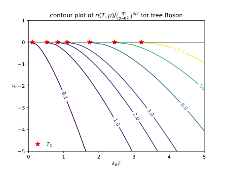

Bose-Einstein distribution
Free Boson
For free Bosons, the particle density can be written as the sum of the Bose-Einstein distribution for every energy level with momentum \(\mathbf{k}\),
\[ n(T, \mu) = \frac{1}{V}\sum_{\mathbf{k}} \frac{1}{e^{ \frac{1}{k_B T}\left( \frac{\hbar^2 k^2}{2m} - \mu\right)} - 1} = \frac{1}{V}\sum_{\mathbf{k}} \frac{1}{z^{-1}e^{ \frac{1}{k_B T} \frac{\hbar^2 k^2}{2m}} - 1} \]where fugacity \(z = e^{\frac{\mu}{k_BT}}\). Using
\[ \frac{1}{V} \sum_{\mathbf{k}}\to \frac{1}{(2\pi)^3}\int \mathrm{d}^3k \]convert a sum over momentum states into an integral, then,
\[ \begin{align} n(T, \mu) =& \frac{4\pi}{(2\pi)^3}\int_0^{\infty} \mathrm{d}k \frac{k^2}{z^{-1}e^{ \frac{1}{k_B T} \frac{\hbar^2 k^2}{2m} } - 1}\\ =& \frac{1}{\lambda_{\mathrm{d.B.}}^3} \frac{4}{\sqrt{\pi}} \int_0^{\infty}\mathrm{d}x \frac{x^2}{z^{-1}e^{x^2} - 1}\\ =& \frac{1}{\lambda_{\mathrm{d.B.}}^3} \frac{2}{\sqrt{\pi}} \int_0^{\infty}\mathrm{d}\varepsilon \frac{\sqrt{\varepsilon}}{z^{-1}e^{\varepsilon} - 1} \\ =& \frac{1}{\lambda_{\mathrm{d.B.}}^3} \mathrm{Li}_{3/2}(z) \\ =& \left(\frac{m k_B T}{2 \pi \hbar^2} \right)^{3/2}\mathrm{Li}_{3/2}(z) \end{align} \]where we have defined the thermal de Broglie wavelength \(\lambda_{\mathrm{d.B.}} = \sqrt{\frac{2\pi \hbar^2}{m k_B T}}\) by setting
\[ \frac{\hbar^2}{m}\frac{1}{\lambda_{\mathrm{d.B.}}^2} = \frac{k_B T}{2\pi}. \]The Polylogarithm is defined as
\[ \begin{align} \mathrm{Li}_s(z) = \sum_{k = 1}^{\infty} \frac{z^k}{k^s} \end{align} \]
Condensation of free Boson
For free Bosons, when the density fixed, lower the temperature, the chemical potential will approach \(0\). Therefore the Bosons will condense to the zero momentum states. Therefore, we can find the condensate critical temperature \(T_C\) by setting \(\mu\to 0\),
\[ k_B T_C = \left(\frac{n}{\mathrm{Li}_{3/2}(1)}\right)^{2/3}\frac{1}{\frac{m}{2\pi\hbar^2}} \]where \(\mathrm{Li}_{3/2}(1) = \zeta(3/2)\approx2.612\).
Condensation of Fermi pairs
The two components Fermion system on the strong BEC side, every two Fermions form a bound Boson pairs. Thus we can consider this system as a free Bosons. We label the density of pairs as \(n\), also every component has a density \(n\). Label the mass of a Fermion as \(m\), so the mass of a pair is \(M=2m\), and the chemical potential \(2\mu\). We define the Fermi momentum as \(k_F^3 = 6\pi^2 n\), and Fermi energy as \(E_F = \frac{\hbar^2 k_F^2}{2m}\). Then the density of pairs can be written as
\[ \begin{align} n(T, 2\mu) = \left(\frac{M k_B T}{2 \pi \hbar^2} \right)^{3/2}\mathrm{Li}_{3/2}(z) \end{align} \]where \(z=e^{\frac{2\mu}{k_B T}}\). We can get the condensate critical temperature of pairs
\[ k_B T_C = \left(\frac{n}{\mathrm{Li}_{3/2}(1)}\right)^{2/3}\frac{1}{\frac{M}{2\pi\hbar^2}} = \frac{2\pi}{\left[6\pi^2\mathrm{Li}_{3/2}(1)\right]^{2/3}} E_F \approx 0.218 E_F \]More generally dispersion cases
\[ \int_0^{\infty}\mathrm{d}\varepsilon \frac{x^{\nu}}{z^{-1} e^{\varepsilon} - 1} = \Gamma(1+\nu)\mathrm{Li}_{1+\nu}(z) \]where \(\nu = 1/2\) for the 3D free Boson. And the gamma function
\[ \Gamma(z)=\int _0^{\infty}\mathrm{d}t\cdot e^{-t} t^{z-1} \]which \(\Gamma(3/2) = \sqrt{\pi}/2\) for the 3D free Boson.
For Fermion case
\[ \int_0^{\infty}\mathrm{d}\varepsilon \frac{x^{\nu}}{z^{-1} e^{\varepsilon} + 1} = -\Gamma(1+\nu)\mathrm{Li}_{1+\nu}(-z) \]Fermi-Dirac distribution
For free Bosons, the particle density can be written as the sum of the Bose-Einstein distribution for every energy level with momentum \(\mathbf{k}\),
\[ n(T, \mu) = \frac{1}{V}\sum_{\mathbf{k}} \frac{1}{z^{-1}e^{ \frac{1}{k_B T} \frac{\hbar^2 k^2}{2m}} + 1} \]where fugacity \(z = e^{\frac{\mu}{k_BT}}\). Convert a sum over momentum states into an integral, then,
\[ \begin{align} n(T, \mu) =& \frac{4\pi}{(2\pi)^3}\int_0^{\infty} \mathrm{d}k \frac{k^2}{z^{-1}e^{ \frac{1}{k_B T} \frac{\hbar^2 k^2}{2m} } + 1}\\ =& \frac{1}{\lambda_{\mathrm{d.B.}}^3} \frac{4}{\sqrt{\pi}} \int_0^{\infty}\mathrm{d}x \frac{x^2}{z^{-1}e^{x^2} + 1}\\ =& \frac{1}{\lambda_{\mathrm{d.B.}}^3} \frac{2}{\sqrt{\pi}} \int_0^{\infty}\mathrm{d}\varepsilon \frac{\sqrt{\varepsilon}}{z^{-1}e^{\varepsilon} + 1} \\ =& \frac{1}{\lambda_{\mathrm{d.B.}}^3} \left[-\mathrm{Li}_{3/2}(-z)\right] \\ =& \left(\frac{m k_B T}{2 \pi \hbar^2} \right)^{3/2}\left[-\mathrm{Li}_{3/2}(-z)\right] \end{align} \]
Maxwell-Boltzmann distribution
Reference
- Polylogarithm
- Gamma function
- Pathria, R. K., and Paul D. Beale. Statistical Mechanics. 3rd ed. Amsterdam ; Boston: Elsevier/Academic Press, 2011. Chap.7 and Appendices D, E.
- Stoof, Henk T. C., Koos B. Gubbels, and Dennis B. M. Dickerscheid. Ultracold Quantum Fields. Theoretical and Mathematical Physics. Dordrecht ; New York: Springer, 2009. Chap.4.3.